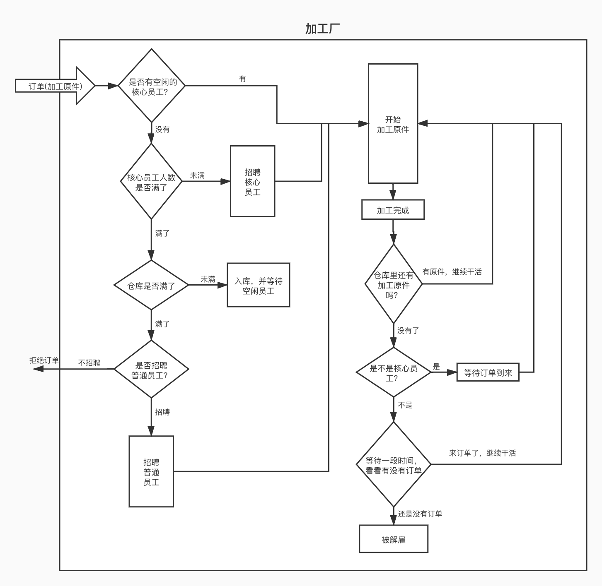

<!DOCTYPE html>
<html lang="en">
<head>
  <meta charset="UTF-8">
<meta name="viewport" content="width=device-width, initial-scale=1, maximum-scale=2">
<meta name="theme-color" content="#222">
<meta name="generator" content="Hexo 5.2.0">
  <link rel="apple-touch-icon" sizes="180x180" href="/images/apple-touch-icon-next.png">
  <link rel="icon" type="image/png" sizes="32x32" href="/images/favicon-32x32-next.png">
  <link rel="icon" type="image/png" sizes="16x16" href="/images/favicon-16x16-next.png">
  <link rel="mask-icon" href="/images/logo.svg" color="#222">

<link rel="stylesheet" href="/css/main.css">


<link rel="stylesheet" href="/lib/font-awesome/css/all.min.css">

<script id="hexo-configurations">
    var NexT = window.NexT || {};
    var CONFIG = {"hostname":"example.com","root":"/","scheme":"Mist","version":"7.8.0","exturl":false,"sidebar":{"position":"left","display":"post","padding":18,"offset":12,"onmobile":false},"copycode":{"enable":false,"show_result":false,"style":null},"back2top":{"enable":true,"sidebar":false,"scrollpercent":false},"bookmark":{"enable":false,"color":"#222","save":"auto"},"fancybox":false,"mediumzoom":false,"lazyload":false,"pangu":false,"comments":{"style":"tabs","active":null,"storage":true,"lazyload":false,"nav":null},"algolia":{"hits":{"per_page":10},"labels":{"input_placeholder":"Search for Posts","hits_empty":"We didn't find any results for the search: ${query}","hits_stats":"${hits} results found in ${time} ms"}},"localsearch":{"enable":true,"trigger":"auto","top_n_per_article":1,"unescape":false,"preload":false},"motion":{"enable":true,"async":false,"transition":{"post_block":"fadeIn","post_header":"slideDownIn","post_body":"slideDownIn","coll_header":"slideLeftIn","sidebar":"slideUpIn"}},"path":"search.xml"};
  </script>

  <meta name="description" content="什么是线程池？线程池是一套完整的线程管理机制。 为什么要用线程池？在一些特定的情况下，需要频繁的开启线程去执行任务，而且任务的执行时间又很短。那么线程的创建和销毁就会频繁的发生，对资源的消耗会比较大。这时候就需要使用线程池，对线程进行复用，降低了线程的创建和销毁次数，从而降低系统的资源消耗。">
<meta property="og:type" content="article">
<meta property="og:title" content="线程池">
<meta property="og:url" content="http://example.com/2018/07/15/JAVA_%E7%BA%BF%E7%A8%8B%E6%B1%A0/index.html">
<meta property="og:site_name" content="JUST DO IT">
<meta property="og:description" content="什么是线程池？线程池是一套完整的线程管理机制。 为什么要用线程池？在一些特定的情况下，需要频繁的开启线程去执行任务，而且任务的执行时间又很短。那么线程的创建和销毁就会频繁的发生，对资源的消耗会比较大。这时候就需要使用线程池，对线程进行复用，降低了线程的创建和销毁次数，从而降低系统的资源消耗。">
<meta property="og:locale" content="en_US">
<meta property="og:image" content="http://example.com/2018/07/15/JAVA_%E7%BA%BF%E7%A8%8B%E6%B1%A0/thread_flow.jpg">
<meta property="article:published_time" content="2018-07-14T16:00:00.000Z">
<meta property="article:modified_time" content="2020-09-29T06:17:22.925Z">
<meta property="article:author" content="Martin">
<meta property="article:tag" content="线程池">
<meta name="twitter:card" content="summary">
<meta name="twitter:image" content="http://example.com/2018/07/15/JAVA_%E7%BA%BF%E7%A8%8B%E6%B1%A0/thread_flow.jpg">

<link rel="canonical" href="http://example.com/2018/07/15/JAVA_%E7%BA%BF%E7%A8%8B%E6%B1%A0/">


<script id="page-configurations">
  // https://hexo.io/docs/variables.html
  CONFIG.page = {
    sidebar: "",
    isHome : false,
    isPost : true,
    lang   : 'en'
  };
</script>

  <title>线程池 | JUST DO IT</title>
  


  <noscript>
  <style>
  .use-motion .brand,
  .use-motion .menu-item,
  .sidebar-inner,
  .use-motion .post-block,
  .use-motion .pagination,
  .use-motion .comments,
  .use-motion .post-header,
  .use-motion .post-body,
  .use-motion .collection-header { opacity: initial; }

  .use-motion .site-title,
  .use-motion .site-subtitle {
    opacity: initial;
    top: initial;
  }

  .use-motion .logo-line-before i { left: initial; }
  .use-motion .logo-line-after i { right: initial; }
  </style>
</noscript>

</head>

<body itemscope itemtype="http://schema.org/WebPage">
  <div class="container use-motion">
    <div class="headband"></div>

    <header class="header" itemscope itemtype="http://schema.org/WPHeader">
      <div class="header-inner"><div class="site-brand-container">
  <div class="site-nav-toggle">
    <div class="toggle" aria-label="Toggle navigation bar">
      <span class="toggle-line toggle-line-first"></span>
      <span class="toggle-line toggle-line-middle"></span>
      <span class="toggle-line toggle-line-last"></span>
    </div>
  </div>

  <div class="site-meta">

    <a href="/" class="brand" rel="start">
      <span class="logo-line-before"><i></i></span>
      <h1 class="site-title">JUST DO IT</h1>
      <span class="logo-line-after"><i></i></span>
    </a>
  </div>

  <div class="site-nav-right">
    <div class="toggle popup-trigger">
        <i class="fa fa-search fa-fw fa-lg"></i>
    </div>
  </div>
</div>


<nav class="site-nav">
  <ul id="menu" class="main-menu menu">
        <li class="menu-item menu-item-home">

    <a href="/" rel="section"><i class="fa fa-home fa-fw"></i>Home</a>

  </li>
        <li class="menu-item menu-item-tags">

    <a href="/tags/" rel="section"><i class="fa fa-tags fa-fw"></i>Tags</a>

  </li>
        <li class="menu-item menu-item-categories">

    <a href="/categories/" rel="section"><i class="fa fa-th fa-fw"></i>Categories</a>

  </li>
        <li class="menu-item menu-item-archives">

    <a href="/archives/" rel="section"><i class="fa fa-archive fa-fw"></i>Archives</a>

  </li>
      <li class="menu-item menu-item-search">
        <a role="button" class="popup-trigger"><i class="fa fa-search fa-fw"></i>Search
        </a>
      </li>
  </ul>
</nav>


  <div class="search-pop-overlay">
    <div class="popup search-popup">
        <div class="search-header">
  <span class="search-icon">
    <i class="fa fa-search"></i>
  </span>
  <div class="search-input-container">
    <input autocomplete="off" autocapitalize="off"
           placeholder="Searching..." spellcheck="false"
           type="search" class="search-input">
  </div>
  <span class="popup-btn-close">
    <i class="fa fa-times-circle"></i>
  </span>
</div>
<div id="search-result">
  <div id="no-result">
    <i class="fa fa-spinner fa-pulse fa-5x fa-fw"></i>
  </div>
</div>

    </div>
  </div>

</div>
    </header>

    
  <div class="back-to-top">
    <i class="fa fa-arrow-up"></i>
    <span>0%</span>
  </div>


    <main class="main">
      <div class="main-inner">
        <div class="content-wrap">
          

          <div class="content post posts-expand">
            

    
  
  
  <article itemscope itemtype="http://schema.org/Article" class="post-block" lang="en">
    <link itemprop="mainEntityOfPage" href="http://example.com/2018/07/15/JAVA_%E7%BA%BF%E7%A8%8B%E6%B1%A0/">

    <span hidden itemprop="author" itemscope itemtype="http://schema.org/Person">
      <meta itemprop="image" content="/images/avatar.jpg">
      <meta itemprop="name" content="Martin">
      <meta itemprop="description" content="Take It Easy">
    </span>

    <span hidden itemprop="publisher" itemscope itemtype="http://schema.org/Organization">
      <meta itemprop="name" content="JUST DO IT">
    </span>
      <header class="post-header">
        <h1 class="post-title" itemprop="name headline">
          线程池
        </h1>

        <div class="post-meta">
            <span class="post-meta-item">
              <span class="post-meta-item-icon">
                <i class="far fa-calendar"></i>
              </span>
              <span class="post-meta-item-text">Posted on</span>

              <time title="Created: 2018-07-15 00:00:00" itemprop="dateCreated datePublished" datetime="2018-07-15T00:00:00+08:00">2018-07-15</time>
            </span>
            <span class="post-meta-item">
              <span class="post-meta-item-icon">
                <i class="far fa-folder"></i>
              </span>
              <span class="post-meta-item-text">In</span>
                <span itemprop="about" itemscope itemtype="http://schema.org/Thing">
                  <a href="/categories/JAVA/" itemprop="url" rel="index"><span itemprop="name">JAVA</span></a>
                </span>
            </span>

          
            <span id="/2018/07/15/JAVA_%E7%BA%BF%E7%A8%8B%E6%B1%A0/" class="post-meta-item leancloud_visitors" data-flag-title="线程池" title="Views">
              <span class="post-meta-item-icon">
                <i class="fa fa-eye"></i>
              </span>
              <span class="post-meta-item-text">Views: </span>
              <span class="leancloud-visitors-count"></span>
            </span>
  
  <span class="post-meta-item">
    
      <span class="post-meta-item-icon">
        <i class="far fa-comment"></i>
      </span>
      <span class="post-meta-item-text">Valine: </span>
    
    <a title="valine" href="/2018/07/15/JAVA_%E7%BA%BF%E7%A8%8B%E6%B1%A0/#valine-comments" itemprop="discussionUrl">
      <span class="post-comments-count valine-comment-count" data-xid="/2018/07/15/JAVA_%E7%BA%BF%E7%A8%8B%E6%B1%A0/" itemprop="commentCount"></span>
    </a>
  </span>
  
  

        </div>
      </header>

    
    
    
    <div class="post-body" itemprop="articleBody">

      
        <h2 id="什么是线程池？"><a href="#什么是线程池？" class="headerlink" title="什么是线程池？"></a>什么是线程池？</h2><p>线程池是一套完整的线程管理机制。</p>
<h2 id="为什么要用线程池？"><a href="#为什么要用线程池？" class="headerlink" title="为什么要用线程池？"></a>为什么要用线程池？</h2><p>在一些特定的情况下，需要频繁的开启线程去执行任务，而且任务的执行时间又很短。那么线程的创建和销毁就会频繁的发生，对资源的消耗会比较大。这时候就需要使用线程池，对线程进行复用，降低了线程的创建和销毁次数，从而降低系统的资源消耗。</p>
<a id="more"></a>

<h2 id="怎么使用？"><a href="#怎么使用？" class="headerlink" title="怎么使用？"></a>怎么使用？</h2><p>一般直接通过 Executors 类，快捷实现不同类型的线程池。</p>
<ol>
<li>executors = Executors.newCachedThreadPool()：无限线程池，非核心线程有 60s 的等待存活时长。</li>
<li>executors = Executors.newFixedThreadPool()：创建固定大小的线程池，非核心线程没有存活等待时间。</li>
<li>executors = Executors.newSecheduledThreadPool()：创建固定大小的线程池，队列使用的是 DelayQueue，可以实现延时任务。</li>
<li>executors = Executors.newSingleThreadExecutor()：创建单个核心线程的线程池，可以实现任务的有序执行。</li>
</ol>
<p>线程池调用 execute 就可以提交一个任务了。</p>
<figure class="highlight abnf"><table><tr><td class="gutter"><pre><span class="line">1</span><br></pre></td><td class="code"><pre><span class="line">executors.execute(runnable)<span class="comment">;</span></span><br></pre></td></tr></table></figure>

<p>线程池的核心是 ThreadPoolExecutor 类，上面提到的通过 Executors 生成的几个常用线程池，都是通过 ThreadPoolExecutor 类来实现的。ThreadPoolExecutor 的构造方法如下：</p>
<figure class="highlight cpp"><table><tr><td class="gutter"><pre><span class="line">1</span><br><span class="line">2</span><br><span class="line">3</span><br><span class="line">4</span><br><span class="line">5</span><br></pre></td><td class="code"><pre><span class="line">ThreadPoolExecutor( <span class="keyword">int</span> corePoolSize,</span><br><span class="line">                    <span class="keyword">int</span> maximumPoolSize,</span><br><span class="line">                    <span class="keyword">long</span> keepAliveTime,</span><br><span class="line">                    TimeUnit unit,</span><br><span class="line">                    BlockingQueue&lt;Runnable&gt; workQueue)</span><br></pre></td></tr></table></figure>

<h2 id="线程池的基本流程"><a href="#线程池的基本流程" class="headerlink" title="线程池的基本流程"></a>线程池的基本流程</h2><p>通过现实生活中的例子更容易理解线程池的基本流程。<br>这里做一个比喻，把线程池必做一个加工厂，线程就是加工厂的员工，任务就是加工原件（订单）。</p>
<pre><code>一个加工原件就相当于一个订单，一个员工同一时间只能处理一个加工原件。
加工厂有自己的仓库，可以存放加工原件。
员工分为核心员工和普通员工。</code></pre>
<p>通过这个比喻来看线程池的工作流程。</p>
<p></p>
<p>图中比较清晰的描述了线程池的工作流程，但是一些细节的地方表达的并不准确。<br>首先简单介绍一下 ThreadPoolExecutor 的构造参数</p>
<figure class="highlight pf"><table><tr><td class="gutter"><pre><span class="line">1</span><br><span class="line">2</span><br><span class="line">3</span><br><span class="line">4</span><br><span class="line">5</span><br></pre></td><td class="code"><pre><span class="line">corePoolSize：核心线程的数量</span><br><span class="line">maximumPoolSize：线程的最大数量</span><br><span class="line"><span class="keyword">keep</span>AliveTime：非核心线程空闲的最大存活时长</span><br><span class="line">unit：<span class="keyword">keep</span>AliveTime 的时长单位</span><br><span class="line">workQueue：阻塞队列，用来存放任务</span><br></pre></td></tr></table></figure>
<p>接下来带着问题来看一下这个流程图。</p>
<h3 id="线程如何实现复用的？"><a href="#线程如何实现复用的？" class="headerlink" title="线程如何实现复用的？"></a>线程如何实现复用的？</h3><p>正常情况下，一个线程执行完了内部操作后，就会销毁。如果不想被销毁，那么只能想办法让代码一直执行下去，或者阻塞住。<br>workQueue 是一个阻塞队列，里面存储着待执行的任务。<br>当线程执行完一个任务后，会尝试从 workQueue 内获取下一个任务。</p>
<pre><code>如果 workQueue 内有任务，那么线程就会拿到新的任务并执行，这样线程就实现了一次复用了。
如果 workQueue 内没有任务了，那么线程去取任务的操作就会阻塞住，等待新的任务加入。

NOTE：线程最初创建的时候，是会携带一个初始任务的，初始任务完成后，再通过循环从 workQueue 获取任务。</code></pre>
<h3 id="核心线程数量，线程总数之间的关系？"><a href="#核心线程数量，线程总数之间的关系？" class="headerlink" title="核心线程数量，线程总数之间的关系？"></a>核心线程数量，线程总数之间的关系？</h3><p>corePoolSize 核心线程的数量，maximumPoolSize 是线程最大数量。</p>
<pre><code>corePoolSize &lt; maximumPoolSize，有可能出现 &lt;非核心线程&gt;。
corePoolSize == maximumPoolSize，不会出现 &lt;非核心线程&gt;。
corePoolSize &gt; maximumPoolSize，maximumPoolSize 的值就没有意义了，可以看做 maximumPoolSize 会被重新赋成 corePoolSize。</code></pre>
<h3 id="核心线程和非核心线程的区别？"><a href="#核心线程和非核心线程的区别？" class="headerlink" title="核心线程和非核心线程的区别？"></a>核心线程和非核心线程的区别？</h3><p>他们的区别在于是否有阻塞超时</p>
<pre><code>核心线程在完成一个任务之后，会阻塞等待下一个任务到来，如果一直没有任务就一直阻塞。
非核心线程在完成一个任务之后，会阻塞指定的时间来等待任务到来，如果超过了指定时间，还没有任务，那么线程就会销毁。</code></pre>
<p>但是一个线程是否是核心线程是动态判定的，并不是线程创建后就固定为核心或者非核心。<br>一个线程一开始是核心线程，过了一段时间后可能会变成非核心线程。<br>一个非核心线程也可能在后期变成一个核心线程。</p>
<p>什么时候去做动态的判定？</p>
<p>当一个线程执行完当前任务，再次去 workQueue 中获取任务的时候，会计算当前正在工作的线程数量 workCount。</p>
<pre><code>如果 workCount &gt; corePoolSize，那么就会通过 workQueue.poll 方法阻塞获取任务。
如果 workCount &lt;=  corePoolSize，那么就会通过 workQueue.take 方法阻塞获取任务。</code></pre>
<p>workQueue.poll 支持设置阻塞时长，那么线程就是非核心线程了。<br>workQueue.take 会一直阻塞，直到获取新任务，那么线程就是核心线程了。</p>
<pre><code>NOTE：有一个 allowCoreThreadTimeOut 参数，默认是 false。
如果设置 allowCoreThreadTimeOut 为 true，那么核心线程和非核心线程在获取任务的时候都会设置阻塞时长。</code></pre>
<h2 id="个人觉得讲的非常好的有关线程池的博客"><a href="#个人觉得讲的非常好的有关线程池的博客" class="headerlink" title="个人觉得讲的非常好的有关线程池的博客"></a>个人觉得讲的非常好的有关线程池的博客</h2><p><a target="_blank" rel="noopener" href="https://tech.meituan.com/2020/04/02/java-pooling-pratice-in-meituan.html">Java线程池实现原理及其在美团业务中的实践</a></p>

    </div>

    
    
    

      <footer class="post-footer">
          <div class="post-tags">
              <a href="/tags/%E7%BA%BF%E7%A8%8B%E6%B1%A0/" rel="tag"># 线程池</a>
          </div>

        


        
    <div class="post-nav">
      <div class="post-nav-item">
    <a href="/2018/01/08/Android%20%E5%86%85%E5%AD%98%E6%B3%84%E6%BC%8F%E7%9A%84%E5%8E%9F%E5%9B%A0%E5%92%8C%E8%A7%A3%E5%86%B3%E6%80%9D%E8%B7%AF/" rel="prev" title="Android 内存泄漏相关">
      <i class="fa fa-chevron-left"></i> Android 内存泄漏相关
    </a></div>
      <div class="post-nav-item"></div>
    </div>
      </footer>
    
  </article>
  
  
  


          </div>
          
    <div class="comments" id="valine-comments"></div>

<script>
  window.addEventListener('tabs:register', () => {
    let { activeClass } = CONFIG.comments;
    if (CONFIG.comments.storage) {
      activeClass = localStorage.getItem('comments_active') || activeClass;
    }
    if (activeClass) {
      let activeTab = document.querySelector(`a[href="#comment-${activeClass}"]`);
      if (activeTab) {
        activeTab.click();
      }
    }
  });
  if (CONFIG.comments.storage) {
    window.addEventListener('tabs:click', event => {
      if (!event.target.matches('.tabs-comment .tab-content .tab-pane')) return;
      let commentClass = event.target.classList[1];
      localStorage.setItem('comments_active', commentClass);
    });
  }
</script>

        </div>
          
  
  <div class="toggle sidebar-toggle">
    <span class="toggle-line toggle-line-first"></span>
    <span class="toggle-line toggle-line-middle"></span>
    <span class="toggle-line toggle-line-last"></span>
  </div>

  <aside class="sidebar">
    <div class="sidebar-inner">

      <ul class="sidebar-nav motion-element">
        <li class="sidebar-nav-toc">
          Table of Contents
        </li>
        <li class="sidebar-nav-overview">
          Overview
        </li>
      </ul>

      <!--noindex-->
      <div class="post-toc-wrap sidebar-panel">
          <div class="post-toc motion-element"><ol class="nav"><li class="nav-item nav-level-2"><a class="nav-link" href="#%E4%BB%80%E4%B9%88%E6%98%AF%E7%BA%BF%E7%A8%8B%E6%B1%A0%EF%BC%9F"><span class="nav-number">1.</span> <span class="nav-text">什么是线程池？</span></a></li><li class="nav-item nav-level-2"><a class="nav-link" href="#%E4%B8%BA%E4%BB%80%E4%B9%88%E8%A6%81%E7%94%A8%E7%BA%BF%E7%A8%8B%E6%B1%A0%EF%BC%9F"><span class="nav-number">2.</span> <span class="nav-text">为什么要用线程池？</span></a></li><li class="nav-item nav-level-2"><a class="nav-link" href="#%E6%80%8E%E4%B9%88%E4%BD%BF%E7%94%A8%EF%BC%9F"><span class="nav-number">3.</span> <span class="nav-text">怎么使用？</span></a></li><li class="nav-item nav-level-2"><a class="nav-link" href="#%E7%BA%BF%E7%A8%8B%E6%B1%A0%E7%9A%84%E5%9F%BA%E6%9C%AC%E6%B5%81%E7%A8%8B"><span class="nav-number">4.</span> <span class="nav-text">线程池的基本流程</span></a><ol class="nav-child"><li class="nav-item nav-level-3"><a class="nav-link" href="#%E7%BA%BF%E7%A8%8B%E5%A6%82%E4%BD%95%E5%AE%9E%E7%8E%B0%E5%A4%8D%E7%94%A8%E7%9A%84%EF%BC%9F"><span class="nav-number">4.1.</span> <span class="nav-text">线程如何实现复用的？</span></a></li><li class="nav-item nav-level-3"><a class="nav-link" href="#%E6%A0%B8%E5%BF%83%E7%BA%BF%E7%A8%8B%E6%95%B0%E9%87%8F%EF%BC%8C%E7%BA%BF%E7%A8%8B%E6%80%BB%E6%95%B0%E4%B9%8B%E9%97%B4%E7%9A%84%E5%85%B3%E7%B3%BB%EF%BC%9F"><span class="nav-number">4.2.</span> <span class="nav-text">核心线程数量，线程总数之间的关系？</span></a></li><li class="nav-item nav-level-3"><a class="nav-link" href="#%E6%A0%B8%E5%BF%83%E7%BA%BF%E7%A8%8B%E5%92%8C%E9%9D%9E%E6%A0%B8%E5%BF%83%E7%BA%BF%E7%A8%8B%E7%9A%84%E5%8C%BA%E5%88%AB%EF%BC%9F"><span class="nav-number">4.3.</span> <span class="nav-text">核心线程和非核心线程的区别？</span></a></li></ol></li><li class="nav-item nav-level-2"><a class="nav-link" href="#%E4%B8%AA%E4%BA%BA%E8%A7%89%E5%BE%97%E8%AE%B2%E7%9A%84%E9%9D%9E%E5%B8%B8%E5%A5%BD%E7%9A%84%E6%9C%89%E5%85%B3%E7%BA%BF%E7%A8%8B%E6%B1%A0%E7%9A%84%E5%8D%9A%E5%AE%A2"><span class="nav-number">5.</span> <span class="nav-text">个人觉得讲的非常好的有关线程池的博客</span></a></li></ol></div>
      </div>
      <!--/noindex-->

      <div class="site-overview-wrap sidebar-panel">
        <div class="site-author motion-element" itemprop="author" itemscope itemtype="http://schema.org/Person">
    
  <p class="site-author-name" itemprop="name">Martin</p>
  <div class="site-description" itemprop="description">Take It Easy</div>
</div>
<div class="site-state-wrap motion-element">
  <nav class="site-state">
      <div class="site-state-item site-state-posts">
          <a href="/archives/">
        
          <span class="site-state-item-count">8</span>
          <span class="site-state-item-name">posts</span>
        </a>
      </div>
      <div class="site-state-item site-state-categories">
            <a href="/categories/">
          
        <span class="site-state-item-count">6</span>
        <span class="site-state-item-name">categories</span></a>
      </div>
      <div class="site-state-item site-state-tags">
            <a href="/tags/">
          
        <span class="site-state-item-count">10</span>
        <span class="site-state-item-name">tags</span></a>
      </div>
  </nav>
</div>


  <div class="links-of-blogroll motion-element">
    <div class="links-of-blogroll-title"><i class="fa fa-link fa-fw"></i>
      Learn Links
    </div>
    <ul class="links-of-blogroll-list">
        <li class="links-of-blogroll-item">
          <a href="https://wanandroid.com/" title="https:&#x2F;&#x2F;wanandroid.com" rel="noopener" target="_blank">WanAndroid</a>
        </li>
        <li class="links-of-blogroll-item">
          <a href="https://hencoder.com/" title="https:&#x2F;&#x2F;hencoder.com" rel="noopener" target="_blank">HenCoder</a>
        </li>
    </ul>
  </div>

      </div>

    </div>
  </aside>
  <div id="sidebar-dimmer"></div>


      </div>
    </main>

    <footer class="footer">
      <div class="footer-inner">
        

        

<div class="copyright">
  
  &copy; 
  <span itemprop="copyrightYear">2020</span>
  <span class="with-love">
    <i class="fa fa-heart"></i>
  </span>
  <span class="author" itemprop="copyrightHolder">Martin</span>
</div>
  <div class="powered-by">Powered by <a href="https://hexo.io/" class="theme-link" rel="noopener" target="_blank">Hexo</a> & <a href="https://mist.theme-next.org/" class="theme-link" rel="noopener" target="_blank">NexT.Mist</a>
  </div>

        


      </div>
    </footer>
  </div>

  
  <script src="/lib/anime.min.js"></script>
  <script src="/lib/velocity/velocity.min.js"></script>
  <script src="/lib/velocity/velocity.ui.min.js"></script>

<script src="/js/utils.js"></script>

<script src="/js/motion.js"></script>


<script src="/js/schemes/muse.js"></script>


<script src="/js/next-boot.js"></script>


  


  
<script src="/js/local-search.js"></script>


  

  


<script>
NexT.utils.loadComments(document.querySelector('#valine-comments'), () => {
  NexT.utils.getScript('//unpkg.com/valine/dist/Valine.min.js', () => {
    var GUEST = ['nick', 'mail', 'link'];
    var guest = 'nick,mail,link';
    guest = guest.split(',').filter(item => {
      return GUEST.includes(item);
    });
    new Valine({
      el         : '#valine-comments',
      verify     : false,
      notify     : false,
      appId      : 'jYDC2zdTApH9X9jQTEf3Vl9V-gzGzoHsz',
      appKey     : '6DPx9KMb66WhVyju1N6PYOFf',
      placeholder: "Just go go",
      avatar     : 'mm',
      meta       : guest,
      pageSize   : '10' || 10,
      visitor    : true,
      lang       : '' || 'zh-cn',
      path       : location.pathname,
      recordIP   : false,
      serverURLs : ''
    });
  }, window.Valine);
});
</script>

</body>
</html>
